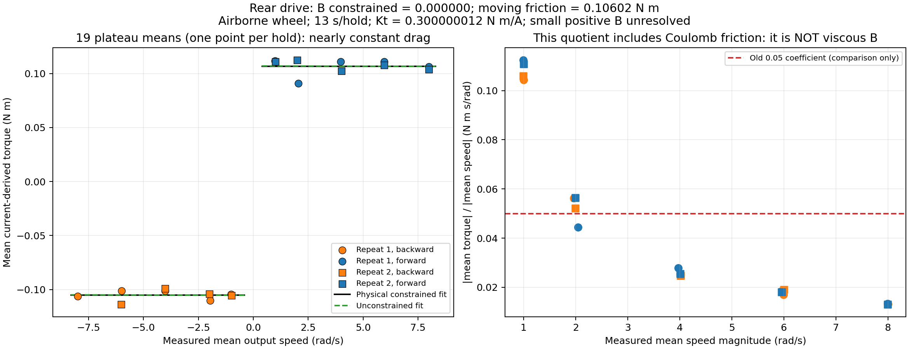
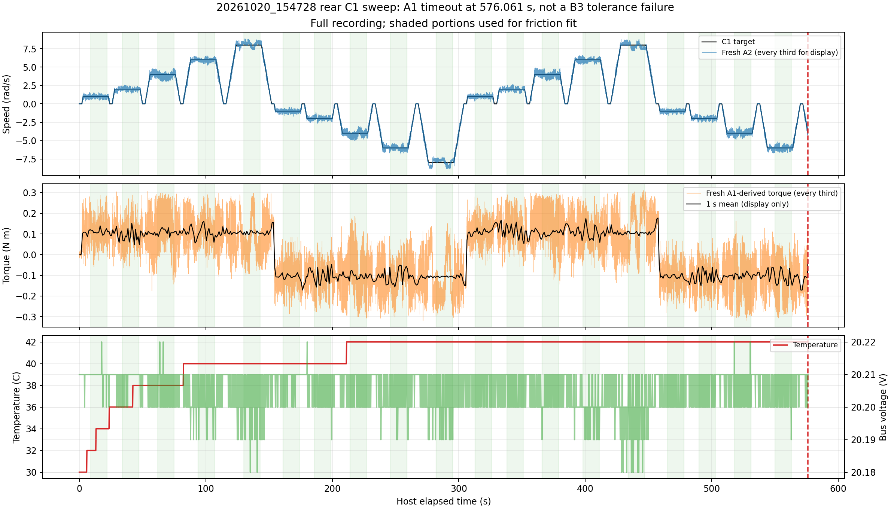

19 complete plateaus. Constrained B = 0.000000 N m s/rad; moving friction = 0.106025 N m. Small positive B is unresolved, not proved zero.
Full report and caveats | Plateau data | Numerical summary

